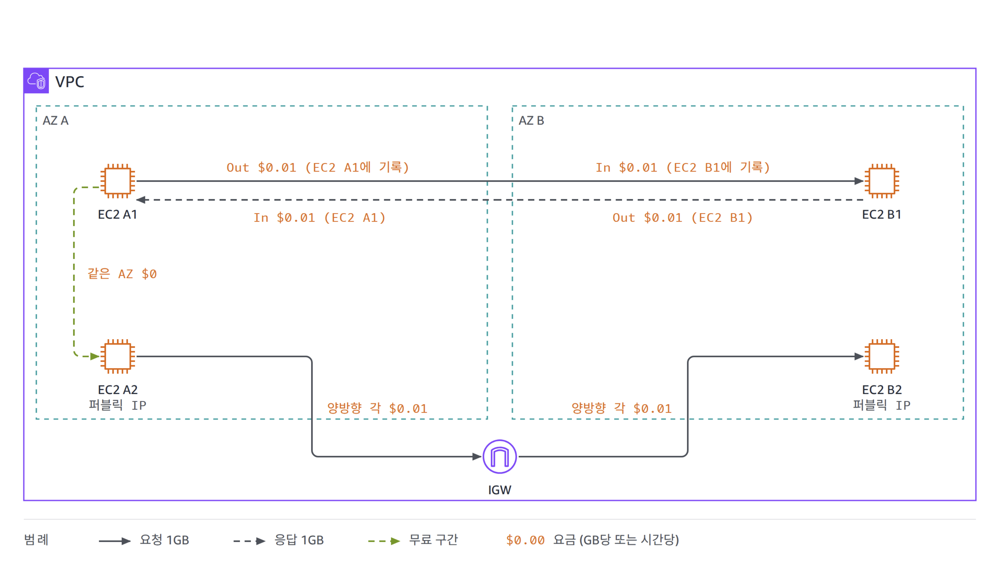
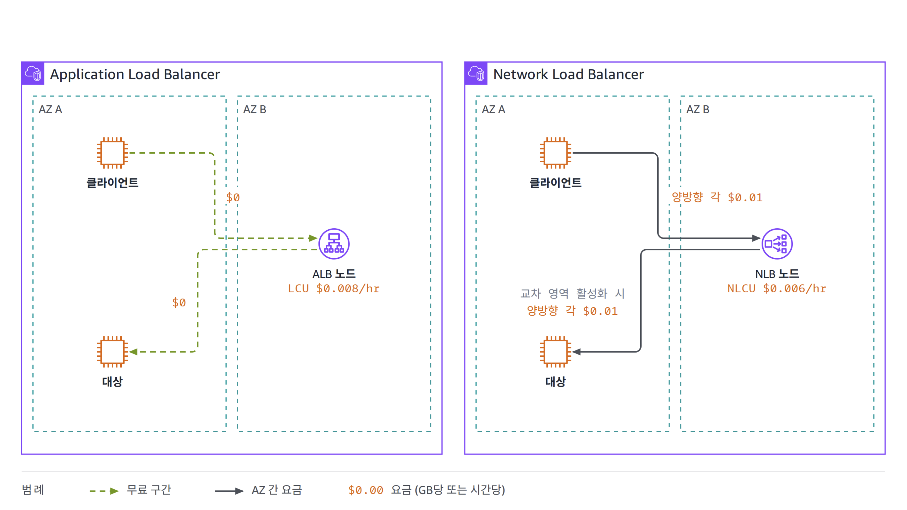
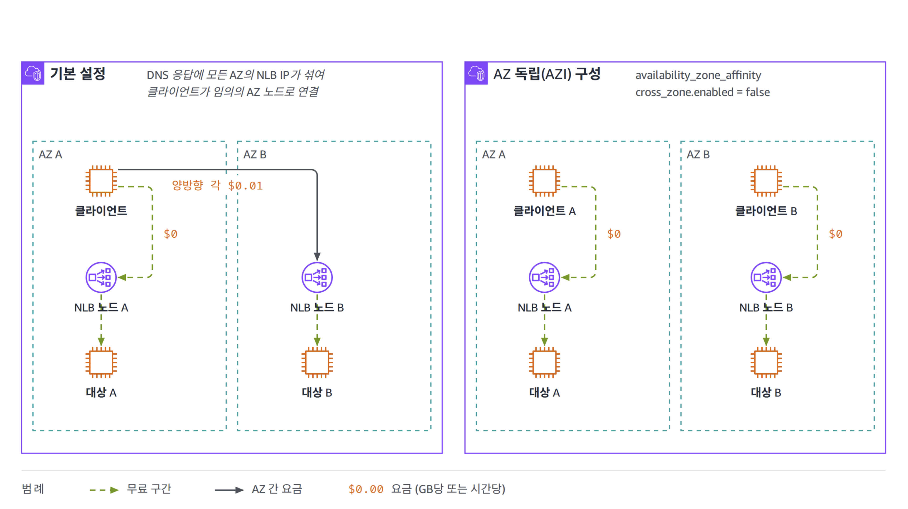
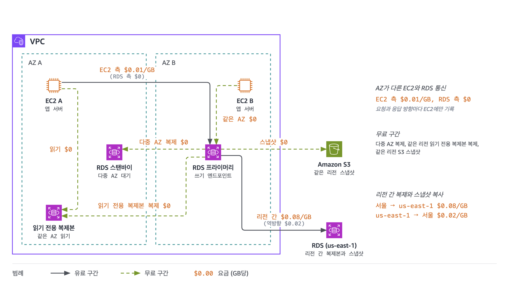
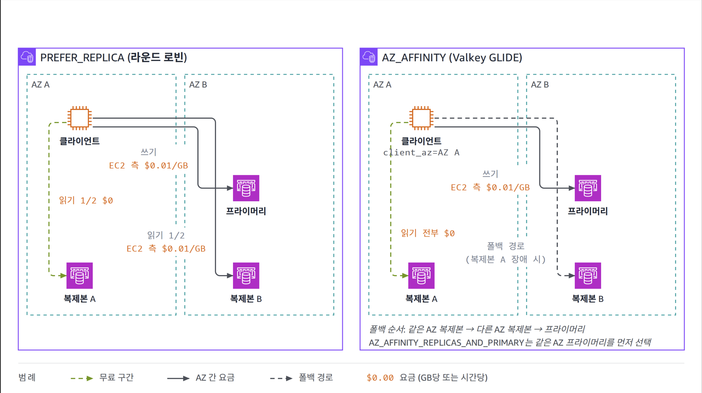
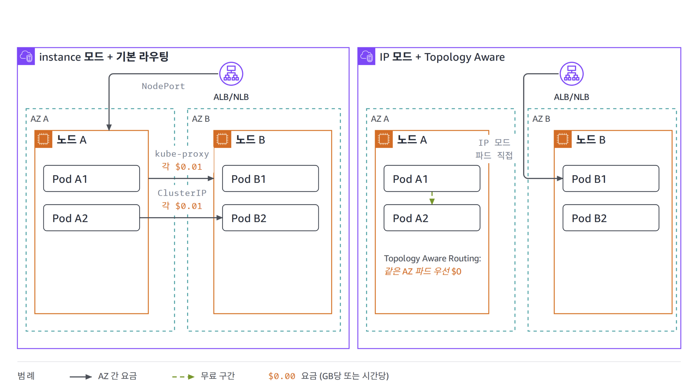

이 글은 같은 리전 안에서 AZ 간 전송 요금이 어디에서 발생하고 어떻게 줄이는지에 답합니다. AZ 간 전송은 보내는 자원과 받는 자원에 각각 GB당 $0.01가 과금되지만 같은 VPC의 ALB 트래픽이나 RDS 복제처럼 무료인 예외가 있고 퍼블릭 IP 통신은 같은 AZ라도 유료입니다. NLB의 AZ 친화도 설정, 읽기 전용 복제본의 AZ별 배치, Valkey GLIDE의 AZ 친화도 읽기, EKS의 Topology Aware Routing으로 트래픽을 같은 AZ에 묶어 이 요금을 줄입니다.This post answers where inter-AZ transfer charges arise within a Region and how to reduce them. Inter-AZ transfer is charged $0.01 per GB on both the sending resource and the receiving resource, but there are free exceptions such as ALB traffic in the same VPC and RDS replication, and public IP communication is charged even within the same AZ. You reduce these charges by keeping traffic in the same AZ with NLB zonal affinity, per-AZ placement of read replicas, Valkey GLIDE AZ affinity reads, and Topology Aware Routing in EKS.
이 글은 같은 리전 안에서 가용 영역(Availability Zone, AZ) 경계를 넘는 트래픽이 어디에서 발생하고 어떻게 최적화하는지를 다룹니다. VPC와 AZ의 기본 개념과 Elastic Load Balancing, Amazon ElastiCache, Amazon EKS를 운영해 본 경험이 있는 아키텍트와 운영 담당자를 대상으로 합니다.
1부에서는 AWS 네트워크 비용이 데이터 전송 요금과 데이터 처리 요금 두 가지로 결정된다는 점을 살펴보았습니다. 전송 요금은 트래픽이 넘는 경계에 따라 과금됩니다. 처리 요금은 NAT Gateway나 VPC 엔드포인트처럼 트래픽이 지나는 관리형 서비스가 부과합니다. 인터넷으로 나가는 DTO는 서울 리전 기준 GB당 $0.126입니다. 같은 리전의 AZ 간 전송은 양방향에 각각 $0.01가 과금됩니다. 1부가 인터넷 경계에서 발생하는 비용을 다뤘다면 2부는 리전 내부를 다룹니다.
리전 안의 비용은 대부분 AZ 경계에서 발생합니다. GB당 $0.01는 작아 보이지만 애플리케이션 서버, 로드 밸런서, 데이터베이스, 컨테이너 파드가 서로 호출하는 트래픽은 하루 24시간 흐릅니다. 이 글에서는 AZ 간 전송 요금이 과금되는 정확한 규칙을 먼저 정리합니다. 이어서 Application Load Balancer(ALB)와 Network Load Balancer(NLB)의 요금 차이, 데이터베이스와 캐시 계층의 무료 구간과 유료 구간, Amazon EKS의 네트워크 비용을 순서대로 살펴봅니다.
이 글의 요금은 서울 리전(ap-northeast-2) 공개 요금 페이지를 기준으로 합니다. 별도 표기가 없으면 GB당 미국 달러입니다. 월 시간은 730시간, 1TB는 1,024GB로 계산합니다. 요금은 변경될 수 있으므로 설계에 반영하기 전에 각 서비스 요금 페이지에서 최신 요금을 확인하시길 권고드립니다.
01
AZ 간 전송 요금은 트래픽의 양쪽 끝에 각각 과금됩니다. AZ A의 EC2가 AZ B의 EC2로 1GB를 보내면 보내는 쪽에 Out $0.01, 받는 쪽에 In $0.01가 기록되어 합계 $0.02가 됩니다. 응답이 돌아오면 같은 방식으로 다시 $0.02가 과금됩니다. CUR에서 DataTransfer-Regional-Bytes가 자원 하나당 두 줄로 기록되는 이유가 이것입니다. 같은 AZ 안에서 프라이빗 IP로 통신하면 $0입니다.
이 규칙에는 예외가 여럿 있습니다. AZ 경계를 넘어도 전송 요금이 없는 서비스가 있고 같은 AZ라도 요금이 과금되는 경로가 있습니다.
| 트래픽 | AZ 간 전송 요금 |
|---|---|
| EC2, Redshift, DAX, ENI 간 프라이빗 IP 통신 | 양방향 각 $0.01 (양쪽 자원에 기록) |
| EC2와 RDS, ElastiCache 노드 사이의 통신 | 방향당 $0.01 (EC2 측에만 기록) |
| 같은 VPC 안에서 ALB와 클라이언트, ALB와 대상 사이의 프라이빗 IP 통신 | $0 |
| NLB와 클라이언트, NLB와 대상 사이의 통신 | 양방향 각 $0.01 |
| VPC Peering 경유 | 같은 AZ $0, 다른 AZ 양방향 각 $0.01 |
| VPC 인터페이스 엔드포인트, Transit Gateway, Client VPN 경유 | $0 (데이터 처리 요금만 부과) |
| VPC Lattice 경유 | $0 (데이터 처리 요금에 포함) |
| RDS 다중 AZ 복제, 같은 리전의 읽기 전용 복제본 복제 | $0 |
| 퍼블릭 IP 또는 Elastic IP로 통신 | 같은 AZ라도 양방향 각 $0.01 |
표 1. 같은 리전 안에서 AZ 경계를 넘는 트래픽의 요금 규칙(서울 리전)
계정이 여러 개라면 AZ 이름 대신 AZ ID를 확인하는 것을 권장합니다. ap-northeast-2a 같은 AZ 이름은 계정마다 다른 물리 AZ에 매핑됩니다. apne2-az1 같은 AZ ID는 모든 계정에서 같은 물리 AZ를 가리킵니다. 다른 계정의 VPC와 Peering으로 통신하는 자원을 같은 AZ에 배치하려면 AZ ID 기준으로 서브넷을 맞춰야 합니다.

02
Elastic Load Balancing은 로드 밸런서 노드가 요청을 받은 AZ와 다른 AZ의 대상으로 트래픽을 보낼 수 있습니다. 이 기능이 교차 영역 로드 밸런싱(Cross-Zone Load Balancing)입니다. 로드 밸런서 유형에 따라 기본값과 요금이 다르고 특히 ALB와 NLB의 차이가 큽니다.
ALB는 교차 영역 로드 밸런싱이 항상 활성화되어 있습니다. 같은 VPC 안에서 프라이빗 IP로 통신하는 클라이언트와 ALB 노드 사이, ALB 노드와 대상 사이의 트래픽은 AZ가 달라도 데이터 전송 요금이 없습니다. AZ 배치를 신경 쓰지 않아도 되는 유일한 로드 밸런서(Classic Load Balancer 제외)입니다. 대상 그룹 수준에서는 2022년 11월부터 load_balancing.cross_zone.enabled 속성으로 교차 영역을 끌 수 있지만 이는 지연 시간이나 AZ 독립성을 위한 선택이고 요금에는 영향이 없습니다. 요금은 로드 밸런서 시간당 요금과 LCU(Load Balancer Capacity Unit) 시간당 $0.008로 구성됩니다.
ALB에서 AZ 간 요금이 과금되는 경우는 두 가지입니다. VPC Peering으로 연결된 다른 VPC의 클라이언트가 다른 AZ의 ALB 노드에 접근할 때, 그리고 클라이언트가 퍼블릭 IP로 접근할 때입니다. 시나리오별 상세 요금은 Classic 및 Application Load Balancers의 데이터 전송 비용 살펴보기에 그림과 함께 나와 있습니다.
NLB는 ALB와 다르게 일반 EC2 트래픽 규칙을 따릅니다. 클라이언트와 NLB 노드가 다른 AZ에 있으면 양방향에 각각 $0.01가 과금됩니다. 교차 영역 로드 밸런싱을 활성화해 NLB 노드가 다른 AZ의 대상으로 트래픽을 보내면 이 구간에도 양방향 $0.01가 과금됩니다. 클라이언트가 AZ A, NLB 노드가 AZ B, 대상이 다시 AZ A에 있으면 요청 한 방향에서만 AZ 경계를 두 번 넘어 GB당 $0.04가 됩니다. 응답 방향에도 같은 금액이 과금됩니다.
| 시나리오 | 클라이언트와 NLB 노드 | NLB 노드와 대상 | 요청 방향 GB당 합계 |
|---|---|---|---|
| 클라이언트, NLB 노드, 대상이 모두 같은 AZ | $0 | $0 | $0 |
| 클라이언트만 다른 AZ | $0.02 | $0 | $0.02 |
| 클라이언트와 대상이 모두 NLB 노드와 다른 AZ | $0.02 | $0.02 | $0.04 |
| VPC Peering으로 연결된 다른 VPC, 같은 AZ | $0 | $0 | $0 |
표 2. NLB 트래픽이 AZ 경계를 넘는 시나리오별 요금(서울 리전)
이 요금이 생기는 원인은 NLB의 두 가지 기본값입니다. 첫째, NLB의 DNS 응답은 기본적으로 AZ 친화도(Zonal Affinity) 0%입니다. 클라이언트가 NLB의 DNS 이름을 조회하면 Route 53 Resolver가 모든 AZ의 정상 NLB IP를 돌려줍니다. 클라이언트는 자기 위치와 무관하게 모든 AZ의 노드로 연결하므로 AZ가 세 개라면 요청의 약 3분의 2가 AZ 경계를 넘어갑니다. 둘째, 교차 영역 로드 밸런싱은 로드 밸런서와 대상 그룹 수준에서 모두 기본 비활성화입니다. 대상 분포를 고르게 하려고 이 설정을 활성화하면 노드에서 대상으로 가는 트래픽이 AZ 경계를 넘기 시작합니다.

두 설정을 조정하면 클라이언트에서 대상까지 트래픽을 같은 AZ 안에 묶을 수 있습니다.
첫째, 클라이언트 라우팅 정책을 AZ 친화도(Zonal Affinity)로 변경합니다. NLB 속성 dns_record.client_routing_policy를 availability_zone_affinity로 설정하면 DNS 응답이 클라이언트와 같은 AZ의 NLB IP를 100% 우선합니다. partial_availability_zone_affinity는 85%만 같은 AZ로 보내고 나머지를 다른 AZ로 분산합니다. 클라이언트 AZ에 정상 NLB IP가 없으면 다른 AZ로 넘어가므로 가용성은 유지됩니다. 이 설정은 같은 VPC의 클라이언트뿐 아니라 Transit Gateway나 VPC Peering을 거쳐 내부 NLB에 접근하는 클라이언트에도 같은 원리로 동작합니다.
둘째, 교차 영역 로드 밸런싱을 비활성화 상태로 유지합니다. 로드 밸런서 속성과 대상 그룹 속성 모두 load_balancing.cross_zone.enabled로 제어합니다. 대상 그룹 값은 true, false, use_load_balancer_configuration 중 하나입니다.
# 클라이언트 라우팅 정책을 100% AZ 친화도(Zonal Affinity)로 변경
aws elbv2 modify-load-balancer-attributes \
--load-balancer-arn arn:aws:elasticloadbalancing:ap-northeast-2:111122223333:loadbalancer/net/internal-nlb/0123456789abcdef \
--attributes Key=dns_record.client_routing_policy,Value=availability_zone_affinity
# 로드 밸런서 수준의 교차 영역 로드 밸런싱 비활성화
aws elbv2 modify-load-balancer-attributes \
--load-balancer-arn arn:aws:elasticloadbalancing:ap-northeast-2:111122223333:loadbalancer/net/internal-nlb/0123456789abcdef \
--attributes Key=load_balancing.cross_zone.enabled,Value=false
# 대상 그룹이 로드 밸런서 설정을 따르도록 변경
aws elbv2 modify-target-group-attributes \
--target-group-arn arn:aws:elasticloadbalancing:ap-northeast-2:111122223333:targetgroup/app-tg/0123456789abcdef \
--attributes Key=load_balancing.cross_zone.enabled,Value=use_load_balancer_configuration두 설정을 함께 적용하면 클라이언트, NLB 노드, 대상이 같은 AZ 안에서 완결되는 AZ 독립(Availability Zone Independence, AZI) 구성이 됩니다. AZ 간 요금이 사라질 뿐 아니라 한 AZ의 장애가 다른 AZ의 요청에 영향을 주지 않고 장애 AZ에서 트래픽을 빼내는 영역 전환(Zonal Shift)도 단순해집니다. 대신 AZ마다 대상 수를 비례해서 맞춰야 합니다. 한 AZ의 대상이 부족하면 그 AZ로 들어온 요청이 몰리기 때문입니다. Auto Scaling 그룹의 AZ 균형 유지 기능이 이 역할을 합니다. 상세 절차와 콘솔 화면 예시는 해당 블로그(Optimizing data transfer costs when using AWS Network Load Balancer)에 있습니다.

Gateway Load Balancer도 NLB와 같은 규칙을 따릅니다. 교차 영역 로드 밸런싱이 기본 비활성화이고 활성화하면 어플라이언스로 향하는 AZ 간 트래픽에 리전 데이터 전송 요금이 과금됩니다.
퍼블릭 로드 밸런서에 같은 VPC의 클라이언트가 퍼블릭 IP로 접근하는 구성은 ALB와 NLB 모두 요금이 과금됩니다. 트래픽이 인터넷 게이트웨이를 거쳐 왕복하므로 양방향에 $0.01가 과금되고 이때는 서브넷, AZ, VPC가 어디든 영향이 없습니다. 내부 클라이언트용으로는 별도의 내부 로드 밸런서를 두는 편이 대부분 저렴합니다. 시간당 2GB를 퍼블릭 IP로 보내면 $0.04가 드는데, 서울 리전에서 ALB나 NLB 하나를 추가하는 시간당 요금은 $0.0225입니다. LCU 또는 NLCU 요금이 더해지지만 트래픽이 조금만 늘어도 내부 로드 밸런서가 유리합니다.
03
데이터베이스는 애플리케이션 서버와 가장 많은 트래픽을 주고받는 구성 요소입니다. 초당 수천 건의 쿼리가 AZ 경계를 넘으면 매달 눈에 띄는 금액이 됩니다. 관리형 데이터베이스는 복제와 백업 트래픽 상당 부분을 무료로 처리합니다. 무료 구간과 유료 구간을 정확히 알아야 설계에 반영할 수 있습니다.
EC2와 RDS 인스턴스가 같은 AZ에 있으면 전송 요금이 없습니다. AZ가 다르면 송신과 수신 방향마다 EC2 인스턴스 측에 GB당 $0.01가 과금됩니다. 다음 세 가지 트래픽은 무료입니다. 다중 AZ 배포에서 프라이머리와 스탠바이 사이의 복제, 같은 리전 안의 읽기 전용 복제본으로 향하는 복제, 같은 리전의 S3로 전송되는 스냅샷입니다. 반면 다른 리전의 읽기 전용 복제본으로 향하는 복제, 스냅샷의 리전 간 복사, 자동 교차 리전 백업에는 리전 간 요금이 과금됩니다. 서울에서 us-east-1로 보내면 $0.08, 반대 방향은 $0.02입니다. RDS가 NAT Gateway를 거쳐 인터넷으로 데이터를 보내는 경우는 EC2와 같습니다. DTO $0.126에 NAT Gateway 처리 요금 $0.059가 더해집니다.

설계에서 확인할 점은 애플리케이션 서버가 어느 AZ의 엔드포인트에 연결하는지입니다. 다중 AZ 배포에서 쓰기 트래픽은 프라이머리가 있는 AZ로 향합니다. 두 AZ에 배치한 애플리케이션 서버 중 절반은 항상 AZ 경계를 넘습니다. 이 구조는 가용성을 위해 감수하는 비용입니다. 읽기 트래픽은 다릅니다. 읽기 전용 복제본을 애플리케이션 서버와 같은 AZ에 두고 AZ별로 연결하면 읽기 트래픽의 AZ 간 요금이 사라집니다.
DynamoDB는 인바운드 전송이 무료입니다. 같은 리전 안에서 EC2와 DynamoDB 사이의 전송도 무료입니다. 프라이빗 서브넷에서는 게이트웨이 엔드포인트를 사용해 NAT Gateway 처리 요금까지 제거하는 것을 권장합니다. DynamoDB Accelerator(DAX)를 사용하는 경우 EC2와 DAX 노드가 같은 AZ에 있으면 무료입니다. AZ가 다르면 양방향 $0.01가 과금됩니다. 다른 리전으로 데이터를 보낼 때는 리전 간 요금이 적용됩니다.
Redshift는 같은 리전의 S3와 주고받는 백업, 복원, 로드(COPY), 언로드(UNLOAD) 트래픽이 무료입니다. 스냅샷을 다른 리전으로 복사하면 리전 간 요금이 과금됩니다. 이때도 방향에 따라 요금이 다릅니다. 서울에서 us-east-1로 보내면 $0.08입니다. 반대 방향은 $0.02입니다. 재해 복구를 위해 스냅샷을 두 리전에 유지하는 구조라면 어느 리전을 프라이머리로 삼는지에 따라 복제 비용이 4배 차이 납니다.
EC2에 직접 구축한 검색 엔진, 인메모리 캐시, NoSQL 클러스터는 상황이 다릅니다. 노드 간 복제 트래픽이 관리형 서비스처럼 면제되지 않습니다. 일반 EC2 트래픽으로 과금됩니다. 세 개 AZ에 노드를 분산한 클러스터는 쓰기 한 건이 들어올 때마다 복제본 수만큼 AZ 경계를 넘습니다. 이 트래픽은 하루 24시간 발생합니다. 1부에서 언급한 고객 사례에서 분기마다 늘어나던 AZ 간 요금의 원인이 이 구조였습니다.
같은 기능을 제공하는 관리형 서비스가 있다면 요금 페이지에서 복제 트래픽 면제 항목을 먼저 확인하는 것을 권고합니다. 자체 구축을 유지해야 한다면 복제본 수, 복제 방식(동기 또는 비동기), 클라이언트가 읽는 노드의 AZ를 점검하는 것을 권고드립니다. AZ 경계를 넘는 트래픽을 줄이는 것이 우선입니다.
04
캐시는 데이터베이스보다 호출 빈도가 높습니다. ElastiCache를 다중 AZ로 구성하면 샤드마다 프라이머리와 복제본이 서로 다른 AZ에 놓입니다. EC2와 ElastiCache 노드가 다른 AZ에 있으면 EC2에서 나가고 들어오는 트래픽에 GB당 $0.01가 과금됩니다. EC2 사이의 통신과 다르게 ElastiCache 노드 쪽에는 요금이 기록되지 않으므로 방향당 $0.01입니다. 대부분의 클라이언트 라이브러리는 읽기 요청을 복제본에 라운드 로빈으로 분산합니다. 복제본이 세 개 AZ에 있으면 읽기 요청의 약 3분의 2가 AZ 경계를 넘습니다. 캐시 읽기 트래픽은 상시 발생하므로 이 비율이 그대로 월 비용이 됩니다.
Valkey GLIDE는 AWS가 개발을 주도하는 Valkey 공식 오픈 소스 클라이언트입니다. GLIDE 1.2부터 AZ 친화도(AZ Affinity) 읽기 전략을 제공합니다. Valkey 8.0에 추가된 availability-zone 서버 설정으로 각 노드의 AZ를 확인한 뒤, 읽기 요청을 클라이언트와 같은 AZ의 노드로 보내는 방식입니다. 자체 구축 Valkey는 8.0 이상에서 노드마다 이 설정을 지정해야 합니다. ElastiCache는 노드의 AZ 매핑을 서비스가 자동으로 채웁니다. Valkey GLIDE 문서는 ElastiCache for Valkey 7.2 이상을 지원 범위로 명시합니다. Java, Python, Node.js 등 여러 언어를 지원합니다. 읽기 전략은 네 가지입니다.
| 읽기 전략 | 동작 | AZ 간 트래픽 |
|---|---|---|
PRIMARY | 항상 프라이머리에서 읽기 | 프라이머리가 다른 AZ에 있으면 모든 읽기가 AZ 경계를 통과 |
PREFER_REPLICA | 복제본에 라운드 로빈, 복제본이 없으면 프라이머리 | 복제본 배치에 따라 상당 부분이 통과 |
AZ_AFFINITY | 같은 AZ의 복제본 우선, 없으면 다른 AZ의 복제본 또는 프라이머리 | 같은 AZ에 복제본이 있으면 $0 |
AZ_AFFINITY_REPLICAS_AND_PRIMARY | 같은 AZ 복제본, 같은 AZ 프라이머리, 다른 AZ 복제본, 다른 AZ 프라이머리 순서로 선택 | 같은 AZ에 노드가 하나라도 있으면 $0 |
표 3. Valkey GLIDE의 네 가지 읽기 전략과 AZ 간 트래픽 발생 여부
두 AZ 친화도 전략은 client_az 설정이 필수입니다. 클라이언트가 자기 AZ를 알아야 같은 AZ의 노드를 고를 수 있기 때문입니다. EC2에서는 인스턴스 메타데이터(IMDSv2)의 placement/availability-zone 값을, EKS에서는 노드 레이블 topology.kubernetes.io/zone 값을 시작 시점에 읽어 넣으면 됩니다. 다음은 Python 클라이언트 설정 예시입니다.
import asyncio
from glide import (GlideClusterClient, GlideClusterClientConfiguration,
NodeAddress, ReadFrom)
async def main():
config = GlideClusterClientConfiguration(
addresses=[NodeAddress("clustercfg.my-valkey.abc123.apn2.cache.amazonaws.com", 6379)],
use_tls=True,
read_from=ReadFrom.AZ_AFFINITY_REPLICAS_AND_PRIMARY,
client_az="ap-northeast-2a", # IMDSv2 또는 노드 레이블에서 읽은 값
)
client = await GlideClusterClient.create(config)
print(await client.get("session:1234"))
asyncio.run(main())
효과는 읽기 비중에 비례합니다. 초당 250MB를 읽는 클러스터에서 요청의 절반이 AZ 경계를 넘는다고 가정하면 한 달(730시간)에 약 313TB가 AZ를 넘습니다. EC2 측 요금 GB당 $0.01를 적용하면 월 약 $3,200입니다. 이 시나리오는 Valkey 블로그의 AZ 친화도 소개 글의 예시를 서울 리전 요금과 730시간 기준으로 다시 계산한 것입니다. AZ 친화도로 읽기를 같은 AZ에 묶으면 이 금액이 사라집니다. 쓰기는 프라이머리로 가므로 프라이머리와 다른 AZ에 있는 클라이언트의 쓰기 트래픽에는 요금이 남습니다. HotelTrader는 Lettuce 클라이언트를 GLIDE로 교체하면서 AZ_AFFINITY_REPLICAS_AND_PRIMARY 전략과 요청 배칭(여러 번의 HGET을 한 번의 HMGET으로 묶는 방식)을 함께 적용했습니다. 그 결과 AZ 간 전송 비용을 95% 줄이고 평균 지연 시간을 49%(배칭 효과 포함) 개선했습니다. 자세한 과정은 How HotelTrader cut inter-AZ cost 95% and latency by 49% with Valkey GLIDE on Amazon ElastiCache에 실려 있습니다.
적용 전에 두 가지를 확인하는 것을 권고드립니다. 첫째, 클라이언트가 있는 모든 AZ에 샤드별 복제본이 하나 이상 있어야 합니다. 복제본이 없는 AZ의 클라이언트는 다른 AZ로 폴백하므로 요금이 그대로 과금됩니다. 복제본 수를 AZ 수에 맞추면 노드 비용이 늘어나므로 읽기 트래픽으로 절감되는 금액과 비교해서 결정하는 것을 권고합니다. 둘째, 복제본 읽기는 복제 지연만큼 오래된 값을 돌려줄 수 있습니다. 최신 값이 필요한 키는 PRIMARY 전략의 별도 클라이언트로 읽는 방법이 있습니다.
05
Kubernetes는 기본적으로 AZ를 인식하지 않습니다. ClusterIP 타입 Service로 들어온 요청은 kube-proxy가 모든 정상 파드에 고르게 분산합니다. 파드가 세 개 AZ에 퍼져 있으면 요청의 약 3분의 2가 AZ 경계를 넘습니다. 마이크로서비스가 서로 호출하는 구조에서는 호출 단계마다 이 비율이 반복됩니다. 요청 하나가 여러 번 AZ 경계를 넘나드는 셈입니다. 노드 간 트래픽은 EC2 트래픽으로 과금되므로 이 모든 구간에 양방향 $0.01가 과금됩니다.
로드 밸런서에서 파드로 들어오는 경로에도 같은 문제가 있습니다. AWS Load Balancer Controller의 instance 모드는 NodePort로 트래픽을 받은 뒤 kube-proxy가 다시 파드로 전달합니다. 대상 파드가 다른 AZ의 노드에 있으면 추가 홉이 생기고 AZ 간 요금이 과금됩니다. NLB를 사용한다면 앞 섹션의 AZ 친화도(Zonal Affinity)와 교차 영역 설정이 그대로 적용됩니다.

다섯 가지 설정으로 이 트래픽을 줄일 수 있습니다.
첫째, AWS Load Balancer Controller를 IP 모드로 구성합니다. Ingress에는 alb.ingress.kubernetes.io/target-type: ip 어노테이션을 지정합니다. LoadBalancer 타입 Service에는 service.beta.kubernetes.io/aws-load-balancer-nlb-target-type: ip 어노테이션을 지정합니다. 로드 밸런서가 파드 IP로 직접 트래픽을 보내므로 NodePort 홉이 사라집니다.
둘째, Topology Aware Routing을 활성화합니다. Service에 service.kubernetes.io/topology-mode: Auto 어노테이션을 추가하면 kube-proxy가 같은 AZ의 엔드포인트를 우선 선택합니다. Kubernetes 1.33부터 정식 기능이 된 Service 스펙의 spec.trafficDistribution 필드로 같은 동작을 더 단순하게 설정할 수 있습니다. 1.35에서는 값으로 PreferSameZone을 사용하고 이전 버전의 PreferClose는 같은 뜻의 옛 별칭입니다. 두 방식 모두 각 AZ에 엔드포인트가 고르게 있어야 제대로 동작합니다. topologySpreadConstraints로 파드를 AZ별로 균등 분산하는 것을 권장합니다. 한 AZ에 파드가 없으면 그 AZ의 요청은 다른 AZ로 넘어갑니다. 특정 AZ의 파드만 과부하되는 일도 생길 수 있습니다.
셋째, 서비스 메시를 사용한다면 Istio의 Locality Load Balancing을 활성화합니다. 사이드카가 같은 AZ의 대상을 우선하도록 localityLbSetting을 지정하면 메시 안의 서비스 간 호출에서 AZ 경계를 넘는 비율이 낮아집니다.
넷째, 파드 단위로 AZ 간 트래픽을 측정합니다. Amazon EKS의 Container Network Observability는 Amazon CloudWatch Network Flow Monitor를 기반으로 클러스터 안의 네트워크 흐름을 파드 수준에서 보여 주는 기능입니다. 노드마다 Network Flow Monitor Agent 애드온(aws-network-flow-monitoring-agent)이 데몬으로 실행되어 흐름을 수집합니다. EKS 콘솔의 Observability 탭에서 네트워크 모니터링을 켜면 별도 파이프라인 없이 사용할 수 있습니다. 에이전트 애드온 v1.1.0 이상이 필요하고 이 버전은 Kubernetes 1.28 이상 클러스터를 지원합니다. Network Flow Monitor가 제공되는 리전인지도 함께 확인하는 것을 권장합니다. 흐름 테이블(flow table)은 세 가지 뷰를 제공합니다. Cluster 뷰에서 AZ 경계를 넘는 흐름(Inter AZ)만 필터하고 전송량으로 정렬하면 어느 워크로드 쌍이 AZ 경계를 가장 많이 넘는지 바로 보입니다. External 뷰는 AWS 밖으로 나가는 트래픽을 보여 주므로 NAT Gateway 처리 요금을 만드는 워크로드를 찾는 데 사용합니다. AWS Service 뷰는 S3, DynamoDB와 주고받는 트래픽을 워크로드별로 보여 줍니다. 같은 데이터는 AWS CLI로도 조회할 수 있습니다.
# 최근 1시간 동안 AZ 경계를 넘은 트래픽 상위 기여 워크로드 조회
aws networkflowmonitor start-query-monitor-top-contributors \
--monitor-name <monitor-name> \
--start-time 2026-09-13T00:00:00Z --end-time 2026-09-13T01:00:00Z \
--metric-name DATA_TRANSFERRED \
--destination-category INTER_AZ
# destination-category: INTRA_AZ, INTER_AZ, INTER_REGION, INTER_VPC, AMAZON_S3, AMAZON_DYNAMODB, UNCLASSIFIED위 설정을 적용하기 전과 후에 같은 필터로 흐름 테이블(flow table)을 비교해 효과를 수치로 검증합니다. 활성화 절차는 Container Network Observability in Amazon EKS에 나와 있습니다. 실제 절감 시나리오는 Track inter-AZ and NAT gateway traffic with EKS Container Network Observability에 실려 있습니다. Network Flow Monitor의 요금은 요금 문서를 확인하시길 권고드립니다. 각 최적화 방법의 상세 구성은 Amazon EKS Best Practices Guide의 Cost Optimization - Networking에 정리되어 있습니다.
다섯째, 컨테이너 이미지 풀 트래픽도 함께 점검하는 것을 권고합니다. 1부에서 설명한 것처럼 ECR 인터페이스 엔드포인트와 S3 게이트웨이 엔드포인트를 함께 만들어야 노드가 이미지를 받을 때 NAT Gateway 처리 요금이 과금되지 않습니다. 다만 이 조치는 ECR에 있는 이미지에만 효과가 있습니다. Docker Hub나 registry.k8s.io 같은 외부 레지스트리에서 직접 받는 이미지는 여전히 NAT Gateway를 거쳐 인터넷으로 나갑니다. 처리 요금 $0.059와 DTO $0.126을 합쳐 GB당 $0.185가 과금됩니다.
Amazon ECR의 풀 스루 캐시(Pull Through Cache)가 이 경로를 없앱니다. 외부 레지스트리를 업스트림으로 등록해 두면 첫 풀에서 ECR이 이미지를 가져와 캐시하고 이후 노드는 같은 리전의 ECR에서 받습니다. 업스트림에서 가져오는 트래픽은 ECR 서비스가 처리하므로 사용자 VPC의 NAT Gateway를 지나지 않습니다. 월 1TB를 외부 레지스트리에서 직접 받던 클러스터라면 월 약 $189가 사라지고 캐시한 이미지 100GB의 ECR 스토리지 요금 월 $10이 대신 남습니다. Docker Hub의 요청 제한을 피하는 효과도 함께 얻습니다. 업스트림으로는 Amazon ECR Public, Kubernetes 컨테이너 이미지 레지스트리(registry.k8s.io), Quay, Docker Hub를 지원합니다. GitHub Container Registry, GitLab Container Registry, Azure Container Registry, 다른 계정이나 리전의 ECR 프라이빗 레지스트리도 지원합니다. Docker Hub처럼 인증이 필요한 업스트림은 자격 증명을 AWS Secrets Manager 시크릿으로 등록합니다.
적용할 때는 이미지 참조를 ECR URI로 바꿔야 합니다. nginx:1.27이 <계정 ID>.dkr.ecr.ap-northeast-2.amazonaws.com/docker-hub/library/nginx:1.27 형태가 되므로 매니페스트와 Helm 값을 함께 수정하는 것을 권장합니다. 리포지토리 생성 템플릿(Repository Creation Template)을 만들어 두면 캐시 리포지토리가 처음 풀 시점에 자동으로 생성됩니다.
06
| 점검 항목 | 비용 요인 | 조치 |
|---|---|---|
| 서버 간 통신 경로 | AZ 간 양방향 각 $0.01, 퍼블릭 IP는 같은 AZ라도 동일 | 프라이빗 IP 사용, 계정 간에는 AZ ID로 서브넷 정렬 |
| ALB | 같은 VPC 프라이빗 IP 통신은 AZ 무관 $0 | Peering 너머 클라이언트와 퍼블릭 IP 접근만 점검 |
| NLB 클라이언트 트래픽 | DNS AZ 친화도(Zonal Affinity) 0%로 2/3가 AZ 경계 통과 | dns_record.client_routing_policy를 availability_zone_affinity로 |
| NLB 대상 트래픽 | 교차 영역 활성화 시 양방향 $0.01 | 교차 영역 비활성화 유지, AZ별 대상 수 비례 배치 |
| 내부 클라이언트의 퍼블릭 로드 밸런서 접근 | IGW 왕복 양방향 $0.01 | 내부 로드 밸런서 별도 구성 |
| 애플리케이션과 데이터베이스 배치 | AZ 간 양방향 $0.01 | 읽기 전용 복제본을 애플리케이션과 같은 AZ에 배치 |
| 리전 간 복제와 백업 | 서울 → us-east-1 $0.08, 반대 $0.02 | 요금이 낮은 방향으로 복제 설계 |
| ElastiCache 읽기 트래픽 | 복제본이 다른 AZ에 있으면 EC2 측 GB당 $0.01 | Valkey GLIDE AZ_AFFINITY 전략과 client_az 설정, AZ별 복제본 배치 |
| 자체 구축 클러스터의 노드 간 복제 | AZ 간 양방향 $0.01, 상시 발생 | 관리형 서비스의 복제 면제 확인, 복제본 수와 읽기 AZ 점검 |
| EKS 서비스 간 호출 | 노드 간 AZ 경계 통과 | IP 모드, Topology Aware Routing, Locality Load Balancing, Container Network Observability로 측정 |
| EKS 컨테이너 이미지 풀 | 외부 레지스트리 이미지는 NAT Gateway 경유 GB당 $0.185 | ECR 엔드포인트 + ECR 풀 스루 캐시 |
표 4. 2부 설계 체크리스트(서울 리전 요금 기준)
2부에서는 같은 리전 안에서 AZ 경계를 넘는 트래픽의 요금 규칙과 이를 최적화하는 방법을 살펴보았습니다. 핵심은 다음 세 가지입니다.
3부에서는 VPC 경계를 넘는 비용을 다룹니다. VPC Peering과 Transit Gateway의 요금 구조, AWS PrivateLink와 Amazon VPC Lattice의 새 엔드포인트 유형, AWS Cloud WAN을 살펴봅니다. Direct Connect와 Site-to-Site VPN으로 온프레미스와 us-east-1을 연결할 때의 비용도 살펴봅니다. (3부 링크)
This post looks at where traffic that crosses Availability Zone (AZ) boundaries within a single Region comes from and how to optimize it. It is written for architects and operators who know the basics of VPCs and AZs and have experience running Elastic Load Balancing, Amazon ElastiCache, and Amazon EKS.
Part 1 showed that AWS network costs come down to two things: data transfer charges and data processing charges. Transfer charges depend on the boundary that traffic crosses. Processing charges come from the managed services that traffic passes through, such as NAT gateways and VPC endpoints. Data transfer out (DTO) to the internet is $0.126 per GB in the Seoul Region. Transfer between AZs in the same Region is charged $0.01 in each direction. Part 1 covered the costs that arise at the internet boundary, and Part 2 covers what happens inside a Region.
Most of the cost inside a Region arises at AZ boundaries. $0.01 per GB looks small, but the traffic that application servers, load balancers, databases, and container pods exchange with one another flows 24 hours a day. This post first lays out the exact rules for when inter-AZ transfer charges apply. It then walks through the pricing differences between Application Load Balancer (ALB) and Network Load Balancer (NLB), the free and paid paths in the database and cache tiers, and network costs in Amazon EKS, in that order.
Prices in this post are based on the public pricing pages for the Asia Pacific (Seoul) Region (ap-northeast-2). Unless noted otherwise, prices are in US dollars per GB. A month is counted as 730 hours and 1 TB as 1,024 GB. Prices can change, so we recommend checking the latest prices on each service's pricing page before you build them into a design.
01
Inter-AZ transfer is charged at both ends of the traffic. When an EC2 instance in AZ A sends 1 GB to an EC2 instance in AZ B, $0.01 is recorded as Out on the sending side and $0.01 as In on the receiving side, for a total of $0.02. When the response comes back, another $0.02 is charged in the same way. This is why DataTransfer-Regional-Bytes is recorded as two lines per resource in the AWS Cost and Usage Report (CUR). Communication over private IP addresses within the same AZ is $0.
This rule has several exceptions. Some services have no transfer charge even when traffic crosses an AZ boundary, and some paths are charged even within the same AZ.
| Traffic | Inter-AZ transfer charge |
|---|---|
| Private IP communication among EC2, Redshift, DAX, and ENIs | $0.01 in each direction (recorded on both resources) |
| Communication between EC2 and RDS or ElastiCache nodes | $0.01 per direction (recorded on the EC2 side only) |
| Private IP communication between an ALB and its clients, and between an ALB and its targets, within the same VPC | $0 |
| Communication between an NLB and its clients, and between an NLB and its targets | $0.01 in each direction |
| Through VPC peering | $0 in the same AZ, $0.01 in each direction across AZs |
| Through VPC interface endpoints, Transit Gateway, or Client VPN | $0 (only data processing charges apply) |
| Through VPC Lattice | $0 (included in the data processing charge) |
| RDS Multi-AZ replication, replication to read replicas in the same Region | $0 |
| Communication over public IP or Elastic IP addresses | $0.01 in each direction, even in the same AZ |
Table 1. Pricing rules for traffic that crosses AZ boundaries within a Region (Seoul Region)
If you have multiple accounts, we recommend checking AZ IDs instead of AZ names. An AZ name such as ap-northeast-2a maps to a different physical AZ in each account. An AZ ID such as apne2-az1 points to the same physical AZ in every account. To place resources that communicate with a VPC in another account over peering in the same AZ, you need to align the subnets by AZ ID.
02
With Elastic Load Balancing, a load balancer node can send traffic to targets in an AZ other than the one where it received the request. This capability is cross-zone load balancing. Defaults and pricing differ by load balancer type, and the gap between ALB and NLB is especially large.
ALB always has cross-zone load balancing enabled. Within the same VPC, traffic over private IP addresses between clients and ALB nodes, and between ALB nodes and targets, has no data transfer charge even when the AZs differ. It is the only load balancer (other than Classic Load Balancer) for which you do not have to think about AZ placement. Since November 2022, you can turn off cross-zone load balancing at the target group level with the load_balancing.cross_zone.enabled attribute, but that is a choice made for latency or AZ independence and has no effect on pricing. Pricing consists of an hourly load balancer charge and $0.008 per Load Balancer Capacity Unit (LCU) hour.
ALB incurs inter-AZ charges in two cases. One is when a client in another VPC connected through VPC peering reaches an ALB node in a different AZ, and the other is when a client connects through a public IP address. Detailed pricing for each scenario is laid out with diagrams in Exploring Data Transfer Costs for Classic and Application Load Balancers (in Korean).
Unlike ALB, NLB follows the general EC2 traffic rules. When a client and an NLB node are in different AZs, $0.01 is charged in each direction. If you enable cross-zone load balancing and an NLB node sends traffic to a target in another AZ, that hop is also charged $0.01 in each direction. With the client in AZ A, the NLB node in AZ B, and the target back in AZ A, the request direction alone crosses an AZ boundary twice, which comes to $0.04 per GB. The same amount is charged in the response direction.
| Scenario | Client and NLB node | NLB node and target | Total per GB in the request direction |
|---|---|---|---|
| Client, NLB node, and target all in the same AZ | $0 | $0 | $0 |
| Only the client in a different AZ | $0.02 | $0 | $0.02 |
| Client and target both in a different AZ from the NLB node | $0.02 | $0.02 | $0.04 |
| Another VPC connected through VPC peering, same AZ | $0 | $0 | $0 |
Table 2. Pricing by scenario when NLB traffic crosses AZ boundaries (Seoul Region)
These charges come from two NLB defaults. First, NLB DNS responses have 0% zonal affinity by default. When a client resolves the NLB's DNS name, Route 53 Resolver returns the healthy NLB IP addresses in all AZs. Clients connect to nodes in every AZ regardless of their own location, so with three AZs about two thirds of requests cross an AZ boundary. Second, cross-zone load balancing is disabled by default at both the load balancer level and the target group level. If you enable it to even out the distribution across targets, traffic from nodes to targets starts crossing AZ boundaries.
Adjusting two settings lets you keep traffic within the same AZ from the client all the way to the target.
First, change the client routing policy to zonal affinity. Setting the NLB attribute dns_record.client_routing_policy to availability_zone_affinity makes DNS responses prefer NLB IP addresses in the client's own AZ 100% of the time. partial_availability_zone_affinity sends only 85% to the same AZ and spreads the rest across other AZs. If the client's AZ has no healthy NLB IP address, resolution falls over to another AZ, so availability is maintained. This setting works on the same principle not only for clients in the same VPC but also for clients that reach an internal NLB through Transit Gateway or VPC peering.
Second, keep cross-zone load balancing disabled. Both the load balancer attribute and the target group attribute are controlled with load_balancing.cross_zone.enabled. The target group value is one of true, false, or use_load_balancer_configuration.
# Change the client routing policy to 100% zonal affinity
aws elbv2 modify-load-balancer-attributes \
--load-balancer-arn arn:aws:elasticloadbalancing:ap-northeast-2:111122223333:loadbalancer/net/internal-nlb/0123456789abcdef \
--attributes Key=dns_record.client_routing_policy,Value=availability_zone_affinity
# Disable cross-zone load balancing at the load balancer level
aws elbv2 modify-load-balancer-attributes \
--load-balancer-arn arn:aws:elasticloadbalancing:ap-northeast-2:111122223333:loadbalancer/net/internal-nlb/0123456789abcdef \
--attributes Key=load_balancing.cross_zone.enabled,Value=false
# Make the target group follow the load balancer setting
aws elbv2 modify-target-group-attributes \
--target-group-arn arn:aws:elasticloadbalancing:ap-northeast-2:111122223333:targetgroup/app-tg/0123456789abcdef \
--attributes Key=load_balancing.cross_zone.enabled,Value=use_load_balancer_configurationApplying both settings gives you an Availability Zone independence (AZI) configuration, in which the client, NLB node, and target stay within the same AZ. Beyond removing inter-AZ charges, a failure in one AZ no longer affects requests in other AZs, and zonal shift, which moves traffic away from an impaired AZ, becomes simpler. In return, you need to keep the number of targets in each AZ proportional. If one AZ is short of targets, the requests that arrive in that AZ pile up on them. The Auto Scaling group feature that keeps AZs balanced fills this role. Detailed steps and console screenshots are in the blog post (Optimizing data transfer costs when using AWS Network Load Balancer).
Gateway Load Balancer follows the same rules as NLB. Cross-zone load balancing is disabled by default, and when you enable it, inter-AZ traffic headed to appliances incurs regional data transfer charges.
When a client in the same VPC reaches a public load balancer through a public IP address, both ALB and NLB incur charges. The traffic makes a round trip through the internet gateway, so $0.01 is charged in each direction, and in this case the subnet, AZ, or VPC makes no difference. For internal clients, a separate internal load balancer is cheaper in most cases. Sending 2 GB per hour through a public IP address costs $0.04, while the hourly charge for adding one ALB or NLB in the Seoul Region is $0.0225. LCU or NLCU charges are added on top, but the internal load balancer comes out ahead as soon as traffic grows even slightly.
03
The database is the component that exchanges the most traffic with application servers. When thousands of queries per second cross an AZ boundary, it adds up to a noticeable amount every month. Managed databases handle much of their replication and backup traffic at no charge. You need to know exactly which paths are free and which are paid before you can reflect them in a design.
When an EC2 instance and an RDS instance are in the same AZ, there is no transfer charge. When the AZs differ, $0.01 per GB is charged on the EC2 instance side for each of the send and receive directions. The following three kinds of traffic are free. They are replication between the primary and the standby in a Multi-AZ deployment, replication to read replicas in the same Region, and snapshots transferred to S3 in the same Region. In contrast, replication to read replicas in another Region, cross-Region snapshot copies, and automated cross-Region backups incur inter-Region charges. Sending from Seoul to us-east-1 is $0.08, and the opposite direction is $0.02. When RDS sends data to the internet through a NAT gateway, the charges are the same as for EC2. The NAT gateway processing charge of $0.059 is added to the DTO charge of $0.126.
The point to check in a design is which AZ's endpoint the application servers connect to. In a Multi-AZ deployment, write traffic goes to the AZ where the primary is. Of the application servers placed across two AZs, half always cross an AZ boundary. This is a cost you accept for availability. Read traffic is different. If you place read replicas in the same AZs as the application servers and connect per AZ, the inter-AZ charge for read traffic goes away.
Inbound data transfer to DynamoDB is free. Transfer between EC2 and DynamoDB within the same Region is also free. In private subnets, we recommend using a gateway endpoint to remove the NAT gateway processing charge as well. With DynamoDB Accelerator (DAX), traffic is free when the EC2 instance and the DAX node are in the same AZ. When the AZs differ, $0.01 is charged in each direction. Sending data to another Region incurs inter-Region charges.
For Redshift, backup, restore, load (COPY), and unload (UNLOAD) traffic exchanged with S3 in the same Region is free. Copying snapshots to another Region incurs inter-Region charges. Here too, the price depends on the direction. Sending from Seoul to us-east-1 is $0.08. The opposite direction is $0.02. If you keep snapshots in two Regions for disaster recovery, the replication cost differs by a factor of 4 depending on which Region you make the primary.
Search engines, in-memory caches, and NoSQL clusters that you build yourself on EC2 are a different story. Replication traffic between nodes is not waived the way it is for managed services. It is charged as ordinary EC2 traffic. In a cluster with nodes spread across three AZs, every incoming write crosses AZ boundaries as many times as there are replicas. This traffic occurs 24 hours a day. This structure was the cause of the inter-AZ charges that grew every quarter in the customer cases mentioned in Part 1.
If a managed service offers the same functionality, we recommend first checking its pricing page for a replication traffic waiver. If you have to stay self-managed, we recommend reviewing the number of replicas, the replication mode (synchronous or asynchronous), and the AZ of the nodes that clients read from. Reducing the traffic that crosses AZ boundaries comes first.
04
A cache is called more often than a database. When you configure ElastiCache for Multi-AZ, the primary and replicas of each shard are placed in different AZs. When an EC2 instance and an ElastiCache node are in different AZs, traffic leaving and entering the EC2 instance is charged $0.01 per GB. Unlike communication between EC2 instances, nothing is recorded on the ElastiCache node side, so the charge is $0.01 per direction. Most client libraries distribute read requests across replicas in round-robin fashion. With replicas in three AZs, about two thirds of read requests cross an AZ boundary. Cache read traffic is constant, so this ratio translates directly into monthly cost.
Valkey GLIDE is the official open source Valkey client, with AWS leading its development. Starting with GLIDE 1.2, it provides an AZ affinity read strategy. It uses the availability-zone server configuration added in Valkey 8.0 to identify the AZ of each node, and then sends read requests to nodes in the same AZ as the client. Self-managed Valkey must be version 8.0 or later with this configuration set on every node. With ElastiCache, the service fills in the node AZ mapping automatically. The Valkey GLIDE documentation states ElastiCache for Valkey 7.2 and later as the supported range. It supports multiple languages, including Java, Python, and Node.js. There are four read strategies.
| Read strategy | Behavior | Inter-AZ traffic |
|---|---|---|
PRIMARY | Always reads from the primary | All reads cross an AZ boundary when the primary is in another AZ |
PREFER_REPLICA | Round robin across replicas, the primary when there are no replicas | A large share crosses, depending on replica placement |
AZ_AFFINITY | Prefers replicas in the same AZ, otherwise replicas in other AZs or the primary | $0 when a replica is in the same AZ |
AZ_AFFINITY_REPLICAS_AND_PRIMARY | Selects in the order of same-AZ replica, same-AZ primary, other-AZ replica, other-AZ primary | $0 when at least one node is in the same AZ |
Table 3. The four Valkey GLIDE read strategies and whether they generate inter-AZ traffic
Both AZ affinity strategies require the client_az setting. The client has to know its own AZ to pick nodes in the same AZ. On EC2, read the placement/availability-zone value from instance metadata (IMDSv2) at startup and pass it in, and on EKS, do the same with the value of the node label topology.kubernetes.io/zone. The following is an example Python client configuration.
import asyncio
from glide import (GlideClusterClient, GlideClusterClientConfiguration,
NodeAddress, ReadFrom)
async def main():
config = GlideClusterClientConfiguration(
addresses=[NodeAddress("clustercfg.my-valkey.abc123.apn2.cache.amazonaws.com", 6379)],
use_tls=True,
read_from=ReadFrom.AZ_AFFINITY_REPLICAS_AND_PRIMARY,
client_az="ap-northeast-2a", # Value read from IMDSv2 or the node label
)
client = await GlideClusterClient.create(config)
print(await client.get("session:1234"))
asyncio.run(main())The benefit is proportional to the share of reads. If a cluster reads 250 MB per second and half of the requests cross an AZ boundary, about 313 TB crosses AZs in a month (730 hours). At the EC2-side rate of $0.01 per GB, that is about $3,200 per month. This scenario recalculates the example in the Valkey blog post that introduces AZ affinity with Seoul Region pricing and 730 hours. Keeping reads in the same AZ with AZ affinity makes this amount go away. Writes go to the primary, so charges remain for write traffic from clients in a different AZ from the primary. HotelTrader replaced its Lettuce client with GLIDE and applied the AZ_AFFINITY_REPLICAS_AND_PRIMARY strategy together with request batching (combining multiple HGET calls into a single HMGET). As a result, it cut inter-AZ transfer cost by 95% and improved average latency by 49% (including the effect of batching). The details are in How HotelTrader cut inter-AZ cost 95% and latency by 49% with Valkey GLIDE on Amazon ElastiCache.
We recommend checking two things before you apply this. First, every AZ that has clients needs at least one replica per shard. Clients in an AZ without a replica fall back to another AZ, so the charge stays as it was. Matching the number of replicas to the number of AZs increases node cost, so we recommend deciding by comparing it with the amount saved on read traffic. Second, replica reads can return values that are stale by as much as the replication lag. For keys that need the latest value, one option is to read them with a separate client that uses the PRIMARY strategy.
05
Kubernetes is not AZ-aware by default. For requests that arrive at a Service of type ClusterIP, kube-proxy distributes them evenly across all healthy pods. With pods spread across three AZs, about two thirds of requests cross an AZ boundary. In an architecture where microservices call one another, this ratio repeats at every step of the call chain. In effect, a single request crosses AZ boundaries several times. Traffic between nodes is charged as EC2 traffic, so every one of these hops is charged $0.01 in each direction.
The path from the load balancer into pods has the same problem. In instance mode, the AWS Load Balancer Controller receives traffic on a NodePort, and kube-proxy then forwards it to a pod. If the target pod is on a node in another AZ, an extra hop is added and inter-AZ charges apply. If you use an NLB, the zonal affinity and cross-zone settings from the previous section apply as they are.
Five settings can reduce this traffic.
First, configure the AWS Load Balancer Controller in IP mode. For an Ingress, specify the alb.ingress.kubernetes.io/target-type: ip annotation. For a Service of type LoadBalancer, specify the service.beta.kubernetes.io/aws-load-balancer-nlb-target-type: ip annotation. The load balancer sends traffic directly to pod IP addresses, so the NodePort hop disappears.
Second, enable Topology Aware Routing. When you add the service.kubernetes.io/topology-mode: Auto annotation to a Service, kube-proxy prefers endpoints in the same AZ. The spec.trafficDistribution field of the Service spec, which became generally available in Kubernetes 1.33, lets you configure the same behavior more simply. In 1.35, you use PreferSameZone as the value, and PreferClose from earlier versions is an older alias with the same meaning. Both approaches work properly only when endpoints are evenly present in each AZ. We recommend spreading pods evenly across AZs with topologySpreadConstraints. If an AZ has no pods, requests in that AZ go to another AZ. Pods in one particular AZ can also become overloaded.
Third, if you use a service mesh, enable Istio locality load balancing. When you set localityLbSetting so that sidecars prefer targets in the same AZ, a smaller share of service-to-service calls inside the mesh crosses AZ boundaries.
Fourth, measure inter-AZ traffic at the pod level. Container Network Observability in Amazon EKS is a feature built on Amazon CloudWatch Network Flow Monitor that shows network flows inside the cluster at the pod level. The Network Flow Monitor Agent add-on (aws-network-flow-monitoring-agent) runs as a daemon on every node and collects flows. When you turn on network monitoring in the Observability tab of the EKS console, you can use it without a separate pipeline. Agent add-on v1.1.0 or later is required, and this version supports clusters running Kubernetes 1.28 or later. We also recommend checking that Network Flow Monitor is available in your Region. The flow table provides three views. In the Cluster view, filtering for flows that cross AZ boundaries (Inter AZ) and sorting by data transferred shows right away which workload pairs cross AZ boundaries the most. The External view shows traffic leaving AWS, so you use it to find the workloads that generate NAT gateway processing charges. The AWS Service view shows traffic exchanged with S3 and DynamoDB by workload. You can also query the same data with the AWS CLI.
# Query the top contributing workloads for traffic that crossed AZ boundaries in the last hour
aws networkflowmonitor start-query-monitor-top-contributors \
--monitor-name <monitor-name> \
--start-time 2026-09-13T00:00:00Z --end-time 2026-09-13T01:00:00Z \
--metric-name DATA_TRANSFERRED \
--destination-category INTER_AZ
# destination-category: INTRA_AZ, INTER_AZ, INTER_REGION, INTER_VPC, AMAZON_S3, AMAZON_DYNAMODB, UNCLASSIFIEDCompare the flow table with the same filter before and after you apply the settings above to verify the effect in numbers. The steps to enable the feature are in Container Network Observability in Amazon EKS. A real cost reduction scenario is covered in Track inter-AZ and NAT gateway traffic with EKS Container Network Observability. For Network Flow Monitor pricing, we recommend checking the pricing documentation. The detailed configuration of each optimization is laid out in Cost Optimization - Networking in the Amazon EKS Best Practices Guide.
Fifth, we recommend reviewing container image pull traffic as well. As explained in Part 1, you need to create both the ECR interface endpoints and the S3 gateway endpoint so that nodes pulling images do not incur NAT gateway processing charges. However, this measure only helps for images stored in ECR. Images pulled directly from external registries such as Docker Hub or registry.k8s.io still go through the NAT gateway to the internet. The processing charge of $0.059 and the DTO charge of $0.126 add up to $0.185 per GB.
The Amazon ECR pull through cache removes this path. Once you register an external registry as an upstream, ECR fetches and caches the image on the first pull, and nodes pull from ECR in the same Region after that. Traffic fetched from the upstream is handled by the ECR service, so it does not pass through the NAT gateway in your VPC. For a cluster that used to pull 1 TB per month directly from external registries, about $189 per month goes away, and what remains instead is $10 per month in ECR storage charges for 100 GB of cached images. You also avoid the Docker Hub rate limits. Supported upstreams are Amazon ECR Public, the Kubernetes container image registry (registry.k8s.io), Quay, and Docker Hub. GitHub Container Registry, GitLab Container Registry, Azure Container Registry, and ECR private registries in other accounts or Regions are also supported. For upstreams that require authentication, such as Docker Hub, you register the credentials as an AWS Secrets Manager secret.
When you adopt it, you have to change image references to ECR URIs. nginx:1.27 becomes <account-id>.dkr.ecr.ap-northeast-2.amazonaws.com/docker-hub/library/nginx:1.27, so we recommend updating manifests and Helm values together. If you create a repository creation template in advance, the cache repository is created automatically at the first pull.
06
| Item to review | Cost driver | Action |
|---|---|---|
| Server-to-server communication path | $0.01 in each direction across AZs, the same for public IP even within one AZ | Use private IP addresses, align subnets by AZ ID across accounts |
| ALB | $0 for private IP communication in the same VPC regardless of AZ | Review only clients across VPC peering and access through public IP addresses |
| NLB client traffic | 2/3 crosses AZ boundaries because DNS zonal affinity is 0% | Set dns_record.client_routing_policy to availability_zone_affinity |
| NLB target traffic | $0.01 in each direction when cross-zone is enabled | Keep cross-zone disabled, place targets proportionally in each AZ |
| Internal clients reaching a public load balancer | $0.01 in each direction for the round trip through the IGW | Set up a separate internal load balancer |
| Application and database placement | $0.01 in each direction across AZs | Place read replicas in the same AZ as the application |
| Cross-Region replication and backup | Seoul → us-east-1 $0.08, reverse $0.02 | Design replication in the lower-priced direction |
| ElastiCache read traffic | $0.01 per GB on the EC2 side when the replica is in another AZ | Valkey GLIDE AZ_AFFINITY strategy with the client_az setting, replicas placed in each AZ |
| Node-to-node replication in self-managed clusters | $0.01 in each direction across AZs, occurring constantly | Check the replication waiver of managed services, review the replica count and the read AZ |
| Service-to-service calls in EKS | Node-to-node traffic crossing AZ boundaries | IP mode, Topology Aware Routing, locality load balancing, measurement with Container Network Observability |
| Container image pulls in EKS | $0.185 per GB through the NAT gateway for images from external registries | ECR endpoints + ECR pull through cache |
Table 4. Part 2 design checklist (based on Seoul Region pricing)
Part 2 covered the pricing rules for traffic that crosses AZ boundaries within a Region and how to optimize that traffic. There are three key points.
Part 3 covers the costs of crossing VPC boundaries. It looks at the pricing structure of VPC peering and Transit Gateway, the new endpoint types in AWS PrivateLink and Amazon VPC Lattice, and AWS Cloud WAN. It also looks at the cost of connecting on-premises environments to us-east-1 with Direct Connect and Site-to-Site VPN. (Part 3 link)